Chapter 2 · Part 1 — Space Motel
Jack opened his eyes.
He looked out the window. The tree house had landed inside a large white room.
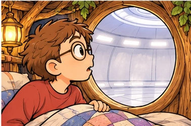
“What kind of training place is this?” asked Annie.
“I don’t know,” said Jack.
The room was round. It had no windows. It had white floors and a wall lit by bright lights.
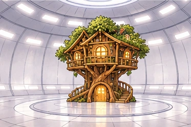
“Hello!” Annie called.
There was no answer.
Where were all the and space scientists? Jack wondered.
“There’s nobody here,” said Annie.
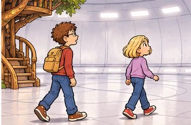
“How do you know?” said Jack.
“I just feel it,” said Annie.
“We’d better find out where we are,” said Jack.
He looked at the page in the moon book. He read the words below the picture of the .
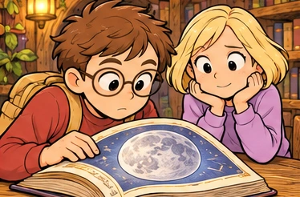
A moon base was built on the moon in the year 2031. The top of the slides open to let spacecrafts enter and leave.
“Oh, man—” Jack .
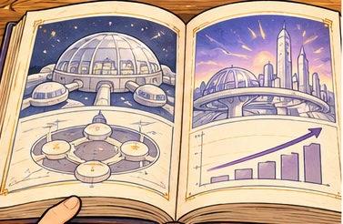
“What’s wrong?” said Annie.
Jack’s heart pounded with excitement. He could hardly speak. “We’ve landed inside a moon base,” he said.
“So … ?” said Annie.
“So the moon base is on the moon!” said Jack.
Annie’s eyes widened. “We’re on the moon?” she asked.
Jack nodded. “The book says the moon base was built in the year 2031,” he said. “So this book was written after that! Which means this book is from the future!”
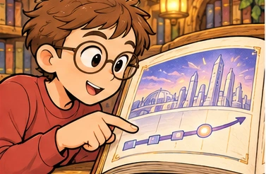
“Oh, wow,” said Annie. “Morgan must have gone forward in time to borrow it from a future library.”
“Right,” said Jack. “And now we’re in the future, on the moon.”
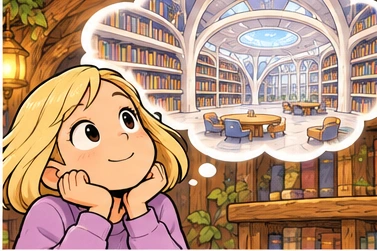
Squeak, squeak!
Annie and Jack looked at Peanut. The mouse was running around in circles.
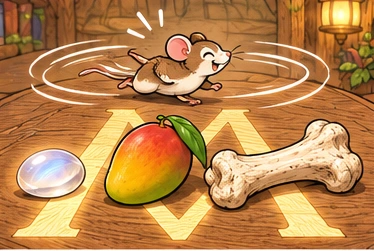
“Poor Peanut,” said Annie.
She tried to pick the mouse up. But Peanut hid behind the mango on the letter M.
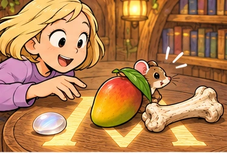
“Maybe she’s about being on the moon,” said Annie.
“She’s not the only one,” said Jack. He let out a deep breath, then he pushed his glasses into place.
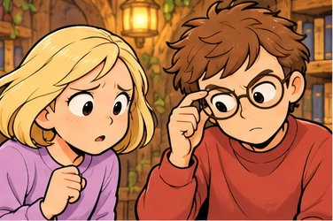
“So what’s a moon base?” asked Annie.
Jack looked at the book.
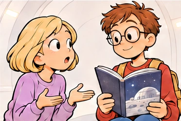